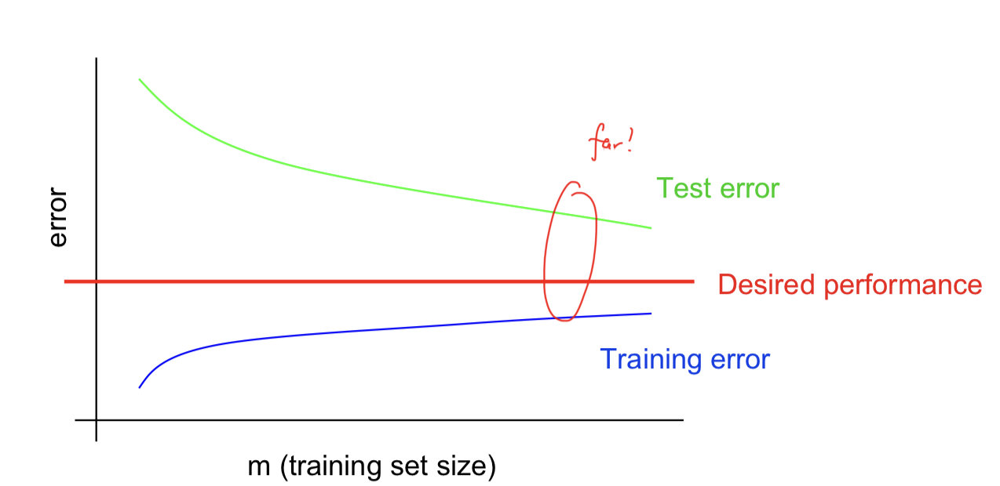
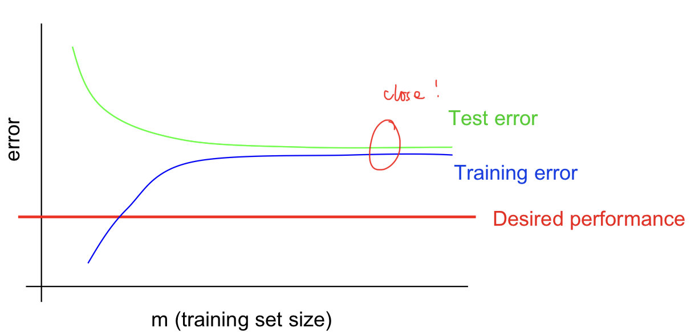

Key ideas:
- Diagnostics for debugging learning algorithms.
- Error analyses and ablative analysis.
- How to get started on a machine learning problem.
- Premature (statistical) optimization.
Debugging Learning Algorithms
Bias vs Variance
一般来说，在讨论我们模型的可用性时，考虑bias和variance两个方面。
我们可以通过Test data和Train data的特征进行推测
Typical learning curve for high variance（Overfitting）:

主要的特征表示为：
- 当样本量增大时Test error也依然减小，表明更多的数据有帮助
- Large gap between training and test error
Typical learning curve for high bias:

主要表现的特征是：
- 在训练集的error也依然太高了
- Small gap between training and test error.
Optimization algorithm
在不改变模型的情况下，优化目标就变得非常重要了。有两个主要的问题：
- 算法是否已经收敛？
- 目标函数是否合适？
如果当目标函数已经够小，但表现出来的结果却不好，那么很有可能是目标函数的问题
如果当目标函数不够小，且表现结果不够好，那么有可能是算法还没收敛
Error Analysis
作者这里以人脸识别为例子，认为分析每一个部分的error非常重要。对于一般的任务来说，我们很多时候希望使用更少的feature达到更好的效果。因此，我们可以去掉某一个feature，看Accuracy是否减少，如果减少的不多，那么该feature并不是特别重要。
Getting started on a learning problem
作者给出了两种设计思路
- Careful design.
- 从feature selection，数据收集，清理，算法设计等各个方面进行考虑，然后再进行训练
- 这样得到的架构是非常清晰和完整的
- Build-and-fix.
- 首先实现了再说，通过之前的分析找不满意的地方，然后再fix
Premature statistical optimization
作者提出的一个建议为非常的认同：我们很多时候过早的进行统计优化了。
例如，拿到一个新问题，不应该直接尝试复杂的模型，或者设计复杂的算法，而是应该将数据plot出来，找到数据中存在的规律和错误。